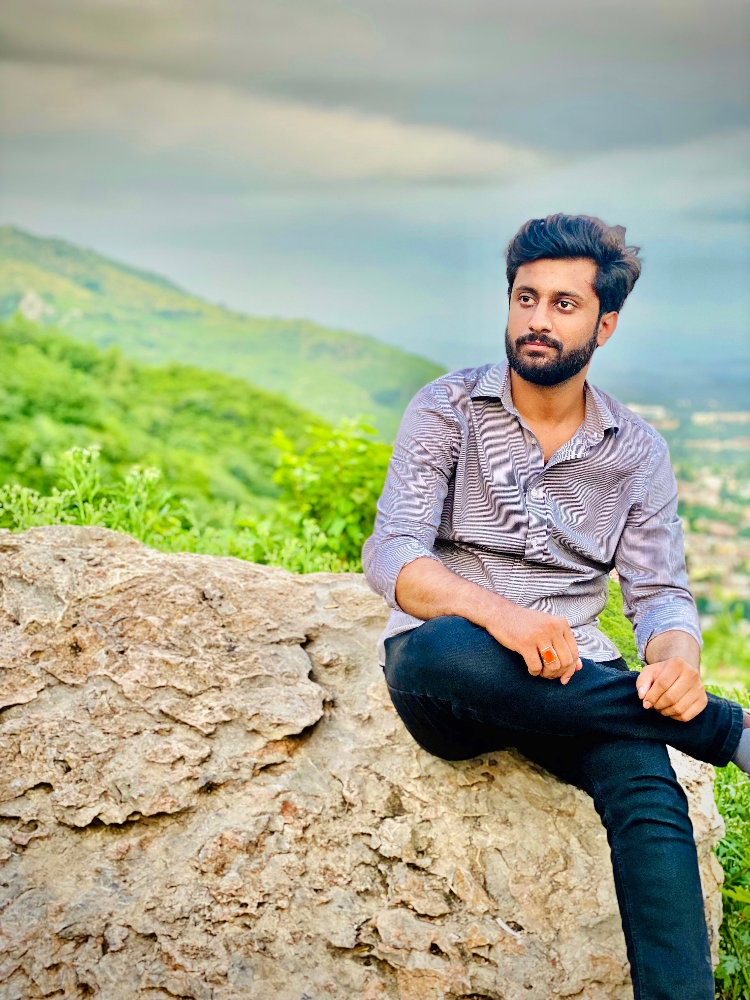

Muhammad Aliyan Abbasi

Summary
Transitioned from Chartered Accountancy (ICAP 2 levels cleared) to Computer Science (BSCS, 3rd semester). Actively pursuing full-stack web development with a focus on modern frontend (React, Next.js, TypeScript) and backend (Node.js, Express.js) technologies. Committed to building real-world projects and completing a comprehensive development roadmap by Sept 2026.
Education
- Bachelors in Computer Science, currently in 3rd semester. (2024-2028)
- Chartered Accountancy, 2 levels cleared out of 4.
- Fsc cleared with 82% marks.
- Matric cleared with 80% marks.
Work experience
- Entry-level Proffesional.
Skills
- Crypto Trading.
- Airdrop Projects.
- Amazon Virtual Assistant.
- Ms Office.
- Html.
- C++.
- Oop.
Awards and Certifications
- State-level speech competition winner.
- Director marketing of a society in University.
Other